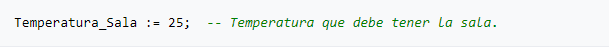
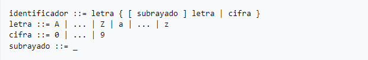
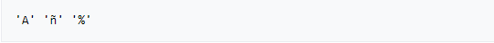
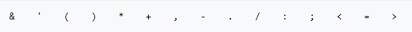
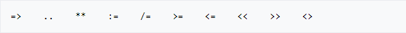
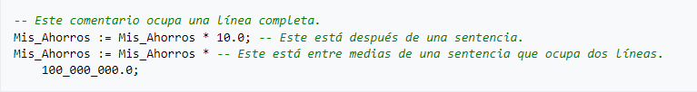

Ada
Sintaxis del lenguaje de programación Ada
La sintaxis, inspirada en Pascal, es bastante legible incluso para personas que no conozcan el lenguaje. Es un lenguaje que no escatima en la
longitud de las palabras clave, en la filosofía de que un programa se escribe una vez, se modifica decenas de veces y se lee miles de veces
(legibilidad es más importante que rapidez de escritura).
Simbolos del lenguaje de programación ADA
El alfabeto de Ada consta de:
Letras mayúsculas: A, ..., Z y minúsculas: a, ..., z.
Dígitos: 0, ..., 9.
Caracteres especiales.
Es de destacar que en Ada 95 se admiten caracteres como 'Ñ', 'Ç' y vocales acentuadas ya que se permiten los 256 caracteres comprendidos en ISO Latin-1.
El alfabeto de minúsculas puede usarse en vez de o junto con el alfabeto de mayúsculas, pero se considera que los dos son idénticos (a excepción de las cadenas de caracteres y literales tipo carácter).
Componentes léxicos
Se pueden encontrar en Ada los siguientes componentes léxicos:
Identificadores
Literales numéricos
Literales de tipo carácter
Cadenas de caracteres
Delimitadores
Comentarios
Palabras reservadas
Hacer constar, que el espacio no constituye nada más que un separador de elementos léxicos, pero es muy importante utilizarlos para una mayor
legibilidad, tanto dentro de las sentencias, como elemento de sangrado para ayudar a diferenciar los bloques.
Ejemplo:

Esta línea contiene 5 elementos léxicos:
El identificador Temperatura_Sala
El delimitador compuesto :=
El número 25
El delimitador simple ;
El comentario -- Temperatura que debe tener la sala.
Identificadores

Aunque dentro de esta definición entrarían las palabras reservadas que tienen un significado propio en el lenguaje y, por tanto, no pueden ser utilizadas como identificadores.
Nota: en la versión Ada 95 se incorporan los caracteres de Latin-1, con lo que se pueden escribir identificadores como Año o Diámetro.
No hay límite en el número de caracteres de un identificador, aunque todo identificador deberá caber en una única línea.
Numeros
Los literales numéricos constan de:
dígitos 0 .. 9
el separador de decimales .
el símbolo de exponenciación e o E
el símbolo de negativo -
el separador _
Como ejemplo, el número real 98,4 se puede representar como: 9.84E1, 98.4e0, 984.0e-1 ó 0.984E+2. No estaría permitido 984e-1.
Para representación de número enteros, por ejemplo 1.900, se puede utilizar 19E2, 190e+1 ó 1_900E+0. Sirviendo el carácter _ como mero separador
para una mejor visualización.
Una última característica es la posibilidad de expresar un literal numérico en una base distinta de 10 encerrando el número entre caracteres #,
precedido por la base: un número entre 2 y 16. Por ejemplo, 2#101# equivale a 101 en base binaria, es decir, al número 5 en decimal. Otro ejemplo
con exponente sería 16#B#E2 que es igual a 11 × 16² = 2.816 (nótese que es 16² y no 10² porque la base en este caso es 16).
Literales de tipo carácter
Contienen un único carácter, por ejemplo: A. Aquí sí se diferencian mayúsculas de minúsculas. Se delimitan por un apóstrofe.
Ejemplos:

Delimitadores
Los delimitadores pueden ser uno de los siguientes caracteres especiales:

O ser uno de los delimitadores compuestos por dos caracteres especiales:

Comentarios
Los comentarios se utilizan para ayudar a comprender los programas y lo constituye toda parte de texto precedida de dos guiones (--)
hasta el fin de línea. No existe la posibilidad de insertar otro elemento léxico en la misma línea a partir de los dos guiones, es decir,
el resto de la línea se interpreta como comentario en su totalidad.

A que tipo de paradigma pertenece?
El lenguaje ADA es un ejemplo de paradigmas de programación como:
Paradigma Imperativo
Paradigma Orientada a objetos
Aplicación a descargar para editar y ejecutar
Se puede descargar el compilador oficial de ADA en el siguiente link: Aqui
Ejemplo de programa
Factorial de N
1 procedure Calcular_Factorial (Num : in Natural; Fact : out Natural) is
2 -- Aquí las variables locales
3 begin
4 -- Calcular factorial
5 Fact := 1;
6 for I in 1 .. Num loop
7 Fact := Fact * I;
8 end loop;
9 end Calcular_Factorial;